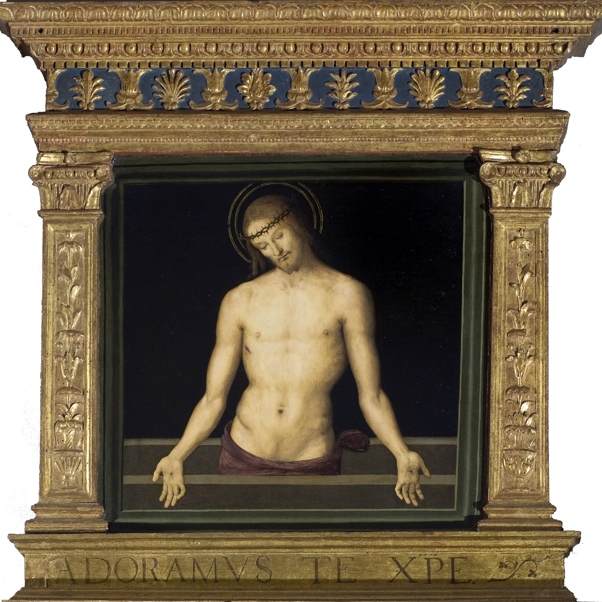

Cristo in pietà, Pietro Vannucci detto il Perugino

- Oggetto: Dipinto
- Soggetto: Cristo in pietà
- Materia e tecnica: Pittura a tempera su tavola - GETTY VOCABULARIES
- Misure: Tavola, cm 86.5 × 90 cm
- Data di lavorazione: 1495
- Attribuzioni: Pietro di Cristoforo Vannucci detto Perugino - VIAF
- Luogo di conservazione: Galleria Nazionale dell'Umbria - GEONAMES
- Codice d'inventario: 248 - INVENTARIO GNU
- Descrizione: Questa immagine del corpo di Cristo, con la testa delicatamente reclinata e i palmi delle mani stimmatizzate offerte alla venerazione dello spettatore, era la cimasa della grande pala d'altare dei Decemviri della cappella dei Priori in questo Palazzo. Dal punto di vista strutturale, la pala si colloca nella tradizione veneziana e di area adriatica di polittici con piccola tavola quadrata isolata a coronamento. Forse per i tempi estremamente dilatati tra progettazione e completamento e per il documentato cambio di soggetto, questa cimasa sembra avere un'atmosfera e un carattere molto diverso dalla tavola principale, che raffigura una sacra conversazione in un arioso ambiente architettonico, con i santi patroni della città Ercolano, Costanzo, Lorenzo e Ludovico di Tolosa intorno alla Madonna in trono col Bambino. Il fondo nero e i toni scuri del sarcofago e del rosso del perizoma creano nella Pietà un contrasto che fa risaltare la morbidezza e dolcezza dell'immagine di Cristo, dove l'umanità del divino è offerta in tutta la sua fragilità.